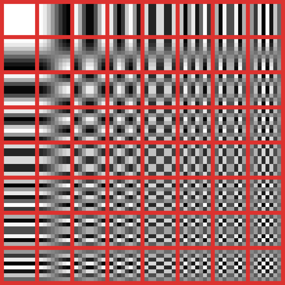
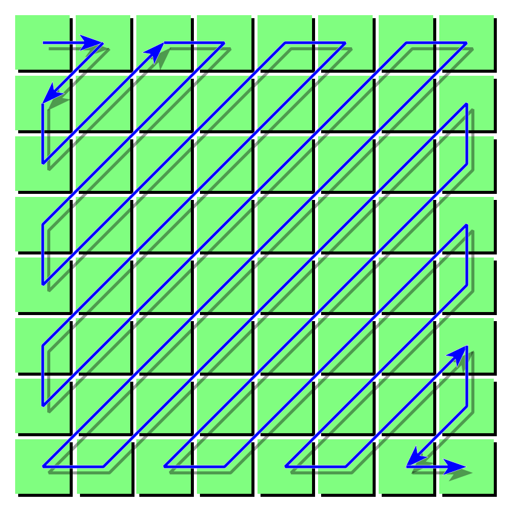

JPEG Encoding
3 types of borders in this presentation:
image
canvas
zoomable
Colors
- Images are made of pixels
- Pixels are made of color components (r, g, b, a?)
- 1 byte (8 bits) per color (0-255)
- 3-4 bytes per pixel
Format comparison
original image: Seljalandsfoss, Suðurland, Islandia
{kind=link}

rgb
add some headers
output.bmp 1920 * 1237 * 3 bytes (6.959 MB)

rgb
some png magic
LZ77,
huffman coding
(similar to zlib)
output.png 1920 * 1237 (4.037 MB)

rgb
jpeg magic
output.jpg 1920 * 1237 (0.731 MB)

Lossy vs Lossless
Common formats on the web
- Lossless: png, svg
- Lossy: jpeg, gif
How do we figure out what data we can throw out and still have an image that looks good enough?
JPEG Compression - Colorspace Conversion
RGB YCbCr
Y (Luminance) how bright the pixel is
Cb blue component relative to green component
Cr red component relative to green component
 CbCr color plane at Y=0.5 (source)
CbCr color plane at Y=0.5 (source)
RGB YCbCr
Y = .299*R + .587*G + .114*B
Cb = 128 + -.169*R + -.331*G + .5*B
Cr = 128 + .5*R + -.419*G + .081*B
JPEG Compression - Colorspace Conversion
Human Eye
~90 million rods (Curcio, C. A.; Sloan, K. R.; et al. (1990). "Human photoreceptor topography". The Journal of Comparative Neurology. 292 (4): 497–523.)
~6 million cones (Osterberg, G. (1935). "Topography of the layer of rods and cones in the human retina". Acta Ophthalmol. Suppl. 13 (6): 1–102.)

Because our eyes are much more sensitive to changes in brightness, we can send the Y channel at full resolution and sub sample some of the color channels.
JPEG Compression - Color Subsampling
4:2:0 subsampling (half vertical and horizontal resolution)

JPEG Compression - Macro Blocks
Photoshop save as jpeg q=1
split image into 8x8 macro blocks
JPEG Compression - Discrete Cosine Transform
Next, each 8×8 block of each component (Y, Cb, Cr) is converted to a frequency-domain representation, using a normalized, two-dimensional type-II discrete cosine transform.
...thanks wikipedia

is the horizontal spatial frequency from 0 to 7
is the vertical spatial frequency from 0 to 7
pixel value at

JPEG Encoding - Quantization
Next: divide matrix element-wise by a quantization matrix
Some suggested tables from the annex of the JPEG standard:
table for Y, q=50
table for Cb,Cr, q=50
JPEG Encoding - Run Length Encoding
Simple zig-zag pattern leads to great compression because of prior steps
(6, 38), (0, -3), (0, 4), (0, -6), (0, 1), (0, 1), (0, 1), (0, -2), (0, 2), (1, -2), (0, -2), (0, 3), (5, -1), (0, -1), (3, -1), (0, 0)
DC coefficients coded as difference between current block and last block, in the form of (size, value). Size is encoded using a huffman symbol.
AC coefficients coded as (run length, size, value). Run length and size are allocated as 4 bits each and the byte is encoded using a huffman symbol.
Huffman symbol for (0, 0) denotes end of block
Finishing up
Write some headers:
- huffman tables
- image data
- thumbnail
- more reading
JPEG standard first relased in 1992
Newer image formats:
- JPEG2000
- Google WebP
- Apple HEIC